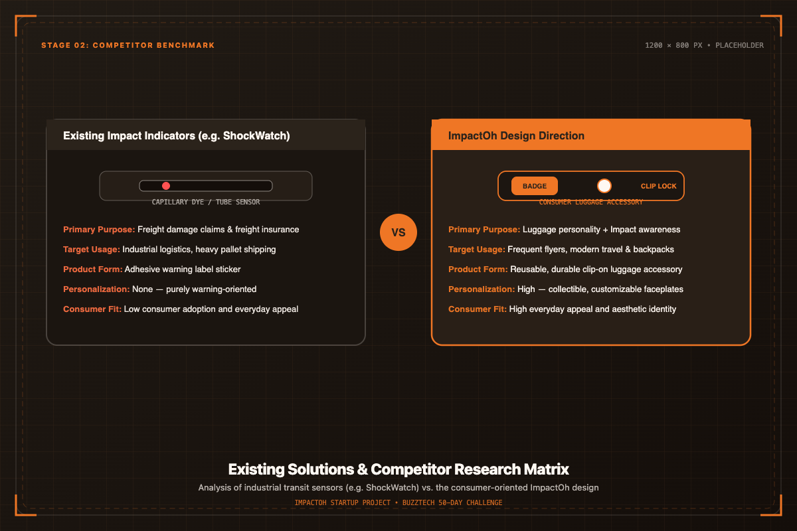
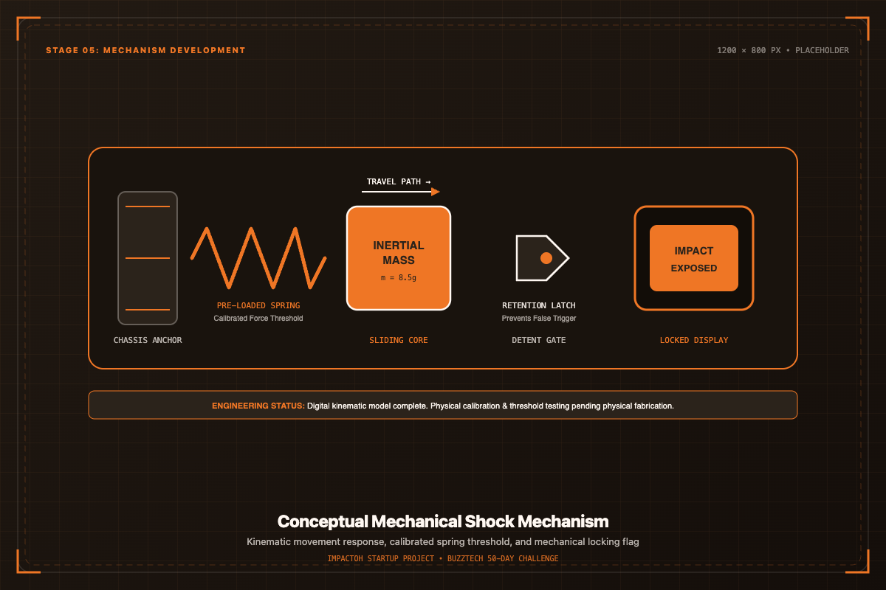
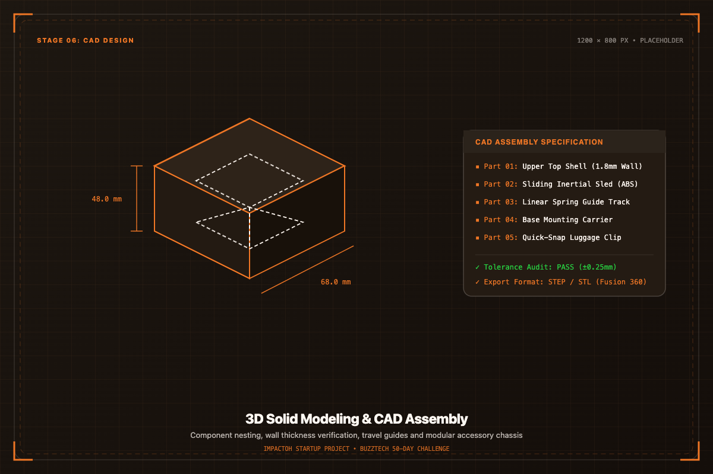
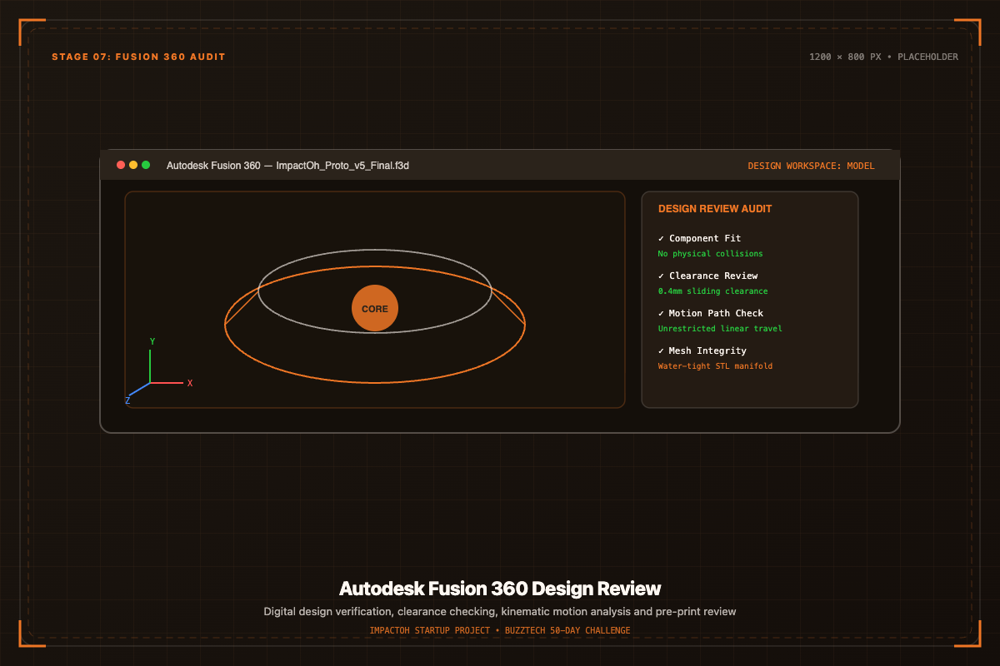
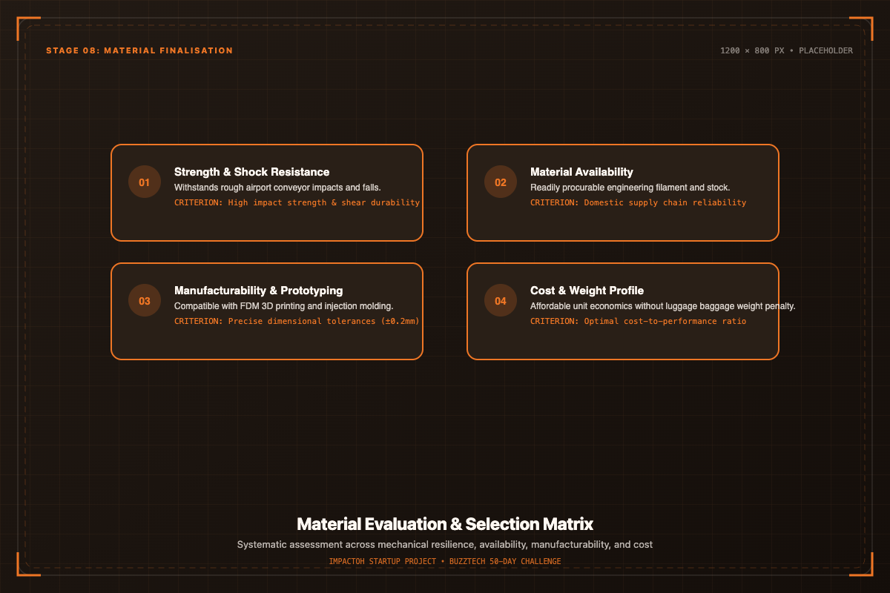
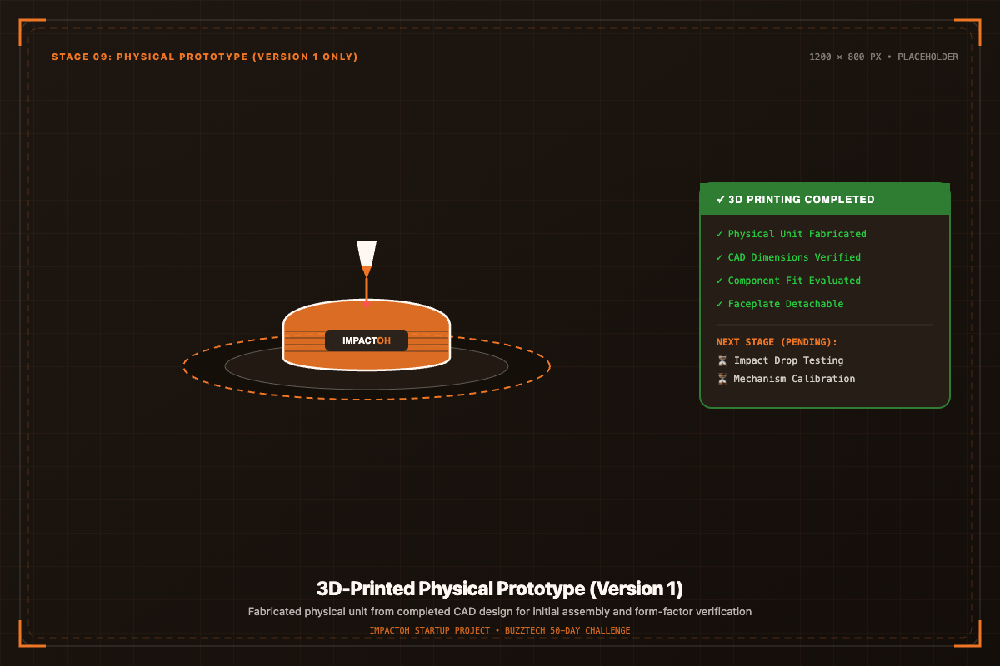

CAD RENDERING • STAGE 04
Concept Integrated

Smart impact detection, redesigned for modern luggage.
ImpactOh is a customisable luggage accessory that adds personality to your bag while incorporating impact detection as an additional functional feature.
A balanced fusion of visual luggage expression and transit impact awareness.
ImpactOh is a luggage-focused product concept developed to address the problem of unnoticed impacts during transportation and handling. The project began with the idea of creating a compact, affordable and single-use impact indicator and gradually evolved into a customisable luggage accessory with impact detection as an additional functional feature.
Detect and indicate significant impact events to inform travelers if their bag experienced excessive physical shock during handling.
Give luggage a more personal and visually attractive identity through modular, customizable exterior faceplates and collectible designs.
Develop the mechanism within a compact luggage-friendly form that clips effortlessly onto standard baggage handles, straps, or zippers.
Baggage handles millions of transfers, yet impact transparency remains limited.
Luggage can experience impacts during transportation, handling and movement, but these events may go unnoticed by the owner. Existing impact indicators address this problem, but many solutions are primarily designed for industrial and logistics applications.
* Problem mapping based on baggage movement stages during multimodal transit. No unsupported damage claims or unverifiable statistical estimates.
Analyzing industrial shock indicators to identify the opportunity for consumer luggage.
The first stage of the project focused heavily on understanding existing impact-detection products and competitors. The team investigated existing impact indicators, their working principles, functionality, pricing, usability, applications, target customers, product form, and industrial versus consumer orientation. Existing commercial impact indicators such as ShockWatch were studied as key examples of the category to understand established physical sensing mechanisms and industry implementations.
Studied capillary fluid release, mechanical springs, and surface-tension disruption triggers.
Evaluated single-use industrial adhesive labels and tubular sensor envelopes.
Analyzed industrial procurement costs and single-use logistics workflows.
Identified that solutions cater to freight carriers and corporate shippers rather than personal luggage.
| Aspect | Existing Impact Indicators (e.g. ShockWatch) | ImpactOh Direction |
|---|---|---|
| Primary purpose | Industrial shipping and supply-chain transit monitoring | Luggage personality and consumer impact awareness |
| Target usage | Single-use industrial shipping crates and commercial pallets | Everyday consumer travel and repeated luggage attachment |
| Product form | Industrial adhesive warning sticker or glass capillary tube | Durable, clip-on luggage accessory with modular faceplates |
| Customisation | None — standard utilitarian warning labels | High — customizable exterior aesthetic and collectibility |
| Consumer appeal | Low — strictly utilitarian and industrial appearance | High — modern travel aesthetic and personal lifestyle appeal |
| Impact detection | Capillary fluid dispersion or single-axis indicator | Movement-based mechanical shock trigger mechanism |
| Development focus | Logistics carrier liability and freight damage disputes | Consumer utility, luggage identity and physical peace of mind |

Evaluating the standalone viability of impact sensing in consumer travel.
During Week 2, the team conducted detailed market research evaluating existing competitors, product functionality, pricing models, usability barriers, target markets, and the potential consumer market for a standalone impact-detection product.
A step-by-step visual progression from problem identification to prototype readiness.
Initial concept of an affordable, compact shock sensor for baggage.
Explored logistics sensors like ShockWatch, mechanism types, and pricing.
Identified occasional-use limitations of standalone shock indicators.
Pivoted to a lifestyle accessory with modular customizable styling.
Explored spring-loaded inertial mass and mechanical locking latch.
Modeled 3D physical housing and nested internal kinematic components.
Audited movement clearances, component fit, and manufacturing draft angles.
Evaluated polymers for strength, weight, availability, and prototyping cost.
Prepared prototype design for physical assembly evaluation and future testing.
A weekly breakdown of engineering, design iteration, and strategic milestones.
A clear understanding of existing competitors, market solutions and the opportunity for ImpactOh.
The team identified the need for an additional value proposition while simultaneously developing the technical direction.
The consumer-facing concept and initial technical mechanism were established.
The mechanism and product structure became an integrated system.
The CAD files were refined into a stronger prototype-ready digital design.
CAD finalisation, material evaluation, and initial 3D printed prototype fabrication successfully achieved.
CAD finalisation and material selection completed; digital design fully prepared for physical fabrication.
How internal movement, calibrated springs, and mechanical locking function conceptually.
Luggage experiences external shock or abrupt deceleration.
Internal inertial mass begins displacement along guided linear track.
Kinetic force overcomes calibrated pre-loaded spring resistance.
Mechanical detent latches in position to permanently record the shock.
High-contrast status indicator displays in exterior viewing aperture.
The mechanism has been developed digitally, but its final real-world impact threshold and reliability still require physical testing and calibration.
Utilizes the natural inertia of a weighted core sliding along a constrained channel upon bag impact.
A calibrated compression spring keeps the mechanism stable during normal handling and casual travel vibration.
Once the threshold is exceeded, a physical latch holds the indicator in place so the event cannot be reset unintentionally.

Translating conceptual sketches into parametric models in Autodesk Fusion 360.
Product structure was created digitally with nested internal cavities, integrated mechanisms, and reviewed component placements.

Examined physical clearances, motion paths, interference checks, and structural wall thicknesses before physical prototyping.

All internal components positioned with proper balance and functional alignment.
Sliding parts verified for smooth travel without friction binding.
Kinematic linear travel paths confirmed inside the digital CAD environment.
Systematic assessment of physical properties required for luggage durability and prototyping.
Ability to endure repeated handling, drops, and transit friction without housing cracking or deformation.
Readily available polymer stock and filament supplies suitable for iterative local prototyping.
Compatibility with additive manufacturing (3D printing) and eventual high-volume plastic injection molding.
Balancing material resilience with affordable unit economics for consumer accessibility.
Low surface friction between sliding internal components to ensure reliable trigger motion.
Rapid turnaround compatibility for validating physical tolerances and fit prior to hard tooling.

An honest overview distinguishing completed milestones from pending validation.

Conceptual revenue streams developed during the 40-day startup sprint.
Intended direct-to-consumer and retail product sales revenue model for the base accessory and collectible faceplate drops.
Delivery and service charges may be applied after commercial launch, with final logistics pricing still to be validated through physical trials.
Potential for customized bulk orders catering to travel agencies, event conferences, tour groups, universities, and corporate business partners.
Clear boundary lines between completed development work and future testing phases.
Tangible research, architectural CAD files, component selection, and design iterations.
Physical validation steps that require structured drop-rig testing and manufacturing tooling.
Seven structured phases from laboratory testing to commercial introduction.
Multidisciplinary student team uniting problem discovery and hardware design.
A multidisciplinary team working from problem research to product development.
Overseeing project roadmap, problem research synthesis, and sprint coordination.
Kinematic mechanism modeling, Autodesk Fusion 360 review, and prototyping tolerances.
Competitor analysis, customer positioning pivot, and brand aesthetic strategy.
Material cost modeling, manufacturing feasibility, and business model structure.